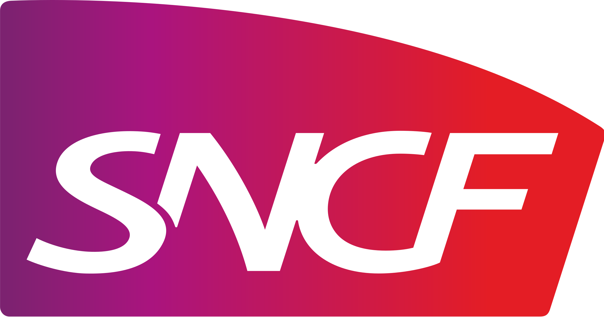
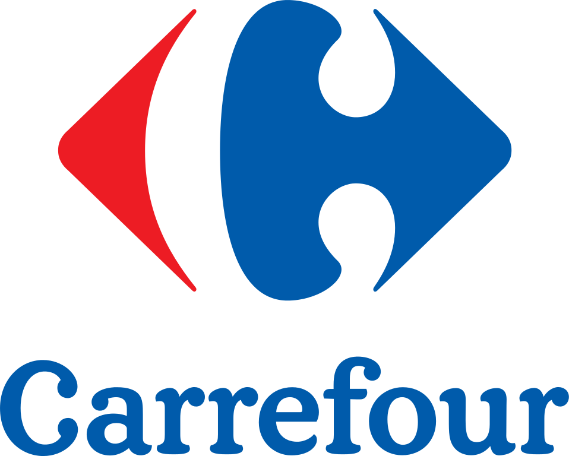

Avril 1998 à aujourd'hui - 
- Mission support depuis janvier 2021
- GET et soutien informatique de l’entité EIGS depuis mars 2021
- Gestion des équipements techniques et téléphoniques pour les ASCT et l’Escale de l’EIGS
- Optimisation, création d’outils informatiques (Excel, Sharepoint, PowerAutomate, PowerApp)
- Soutien du Référent Outil Digital TER Occitanie en janvier et février 2021
- Digitalisation de base de données pour les préventrices sécurité (Excel)
- Gestion des alertes Dossier Sécurité pour l’UO TER SUD (Excel, SharePoint, PowerAutomate)
- Conducteur de lignes principales d'avril 1998 à janvier 2021
Assurer le transport des voyageurs ou de marchandise en tenant compte des obligations réglementaires ferroviaires,
des règles de sécurité des biens et des personnes et des impératifs de service (horaires).
Novembre 1995 à mars 1997 - Promotion & TS Promotion
Démonstrateur de consoles de jeux
- Lancement commercial de la
pour l'hiver 1995-96.
Puis support à la vente, SAV pour de février 1996 à mars 1997
au rayon informatique de  Portet/Garonne
retour acceuil